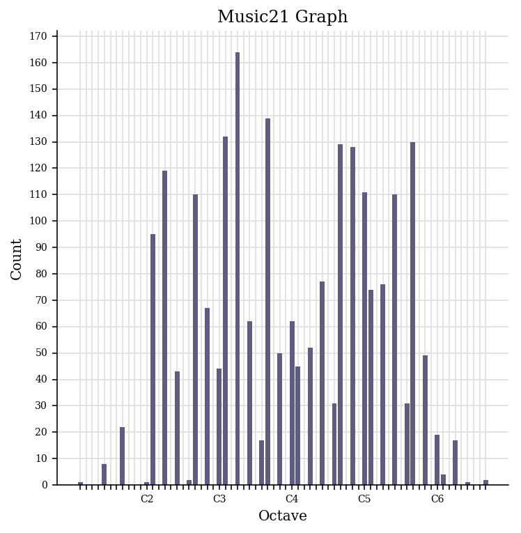
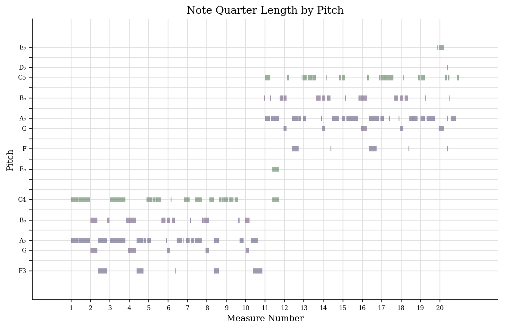
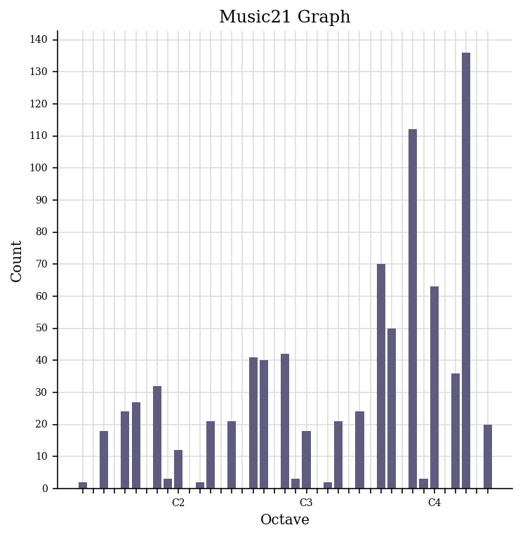
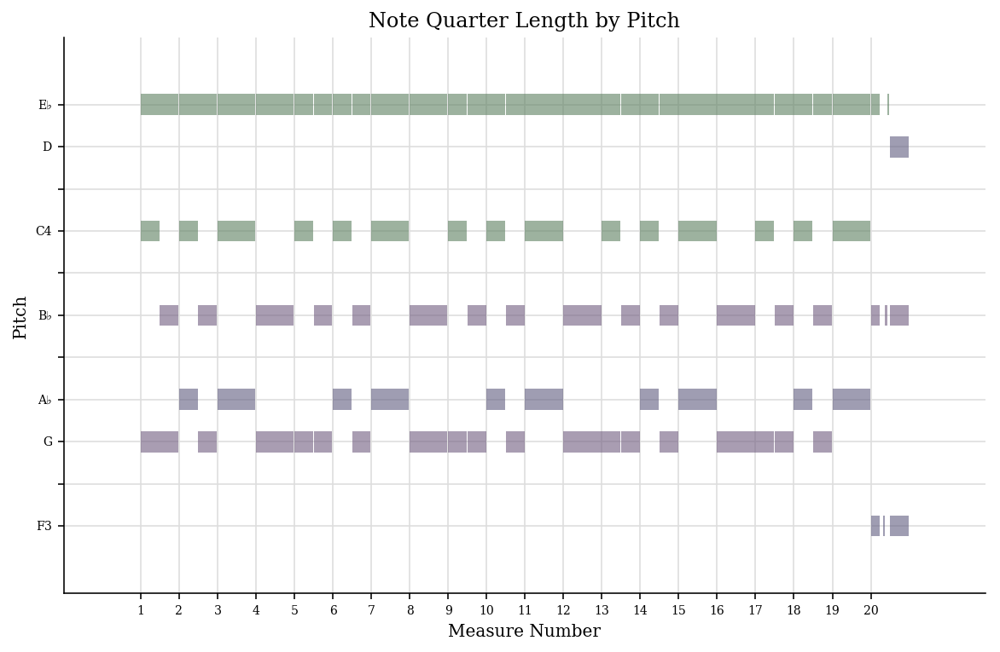
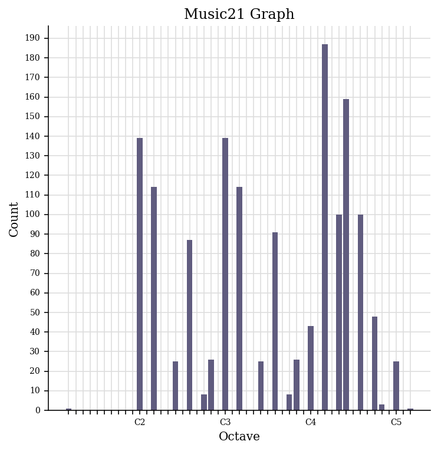
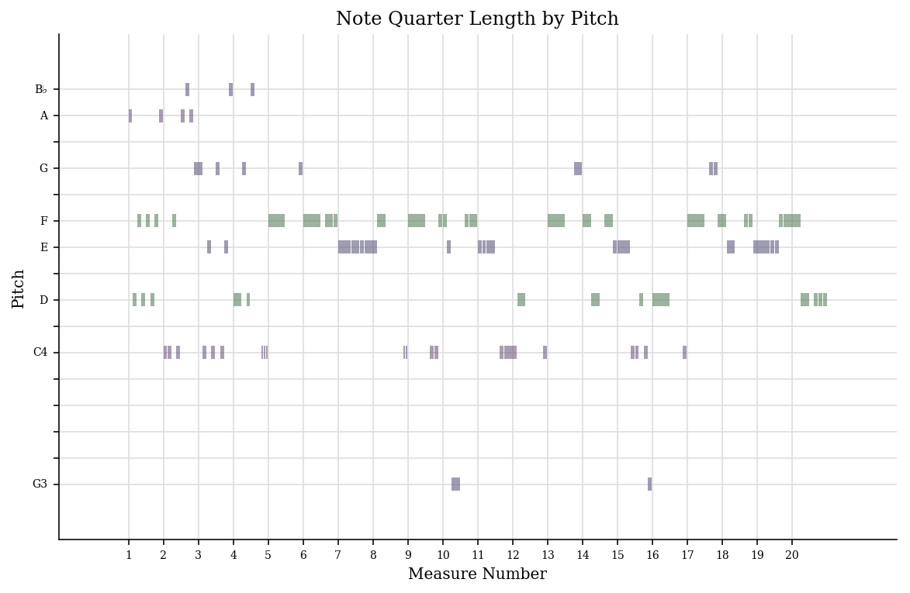
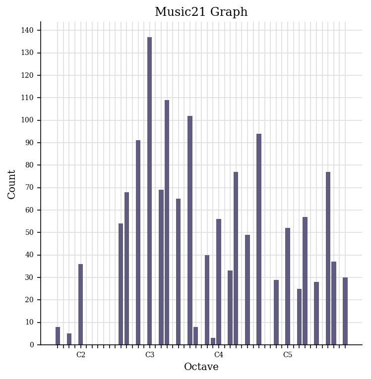
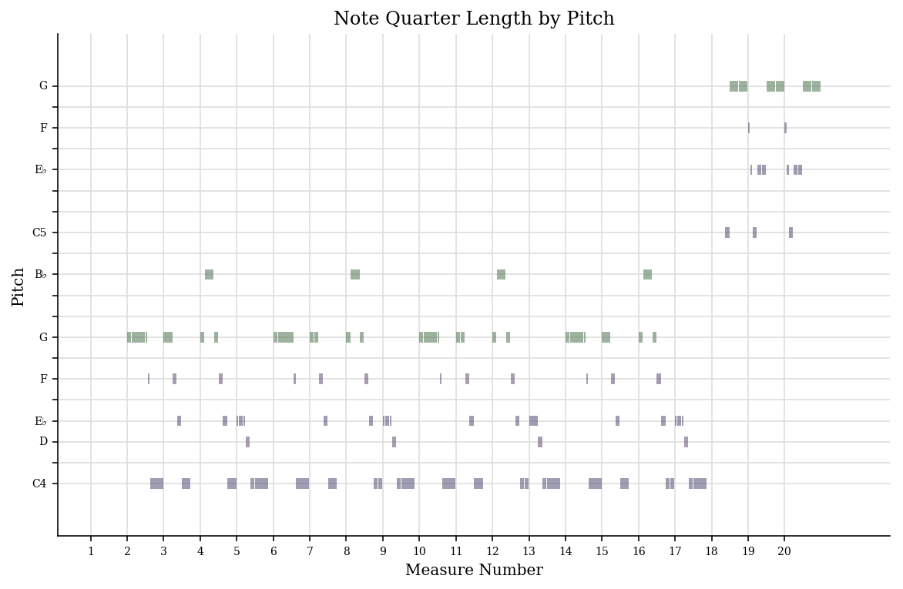

Using the MEI files created through Verovio, I created a piano roll and histogram for the four tracks using Python and music21. The resulting images are as follows:
| Song | Histogram | Piano Roll |
|---|---|---|
| Hello |  |  |
| When We Were Young |  |  |
| Set Fire To The Rain |  |  |
| Rolling In The Deep |  |  |